React Hooks
By Narendran S
Use Spacebar to navigate
Agenda
- ReactJS - Recap
- Functional Component & Hooks
- UseState & UseEffect
- UseMemo & UseCallback
- UseRef & UseImperativeHandle
- UseContext & useReducer
- Custom Hooks
- Excercise
Lets Recap ReactJS
Fundamentals
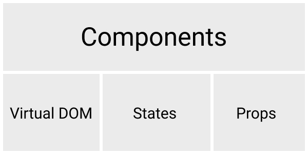Extending React.Component
import React from 'react';
class App extends React.Component {
render () {
return Content
}
}
export default App;
Functional Components
& Hooks
Functional Component
const App = () => {
return Content
}
export default App;
Note: With the new transform from React 17, you can use JSX without importing React.
State & Props
import { useState } from 'react';
const App = (props) => {
const [language, changeLanguage] = useState("English");
return {props.title} - {language}
}
export default App;
React Hooks
- useState
- useEffect
- useContext
- useReducer
- useCallback
- useMemo
- useRef
- useImperativeHandle
useState
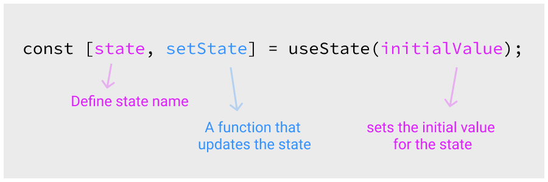From Documentation..
- The React useState Hook allows us to use state in a function component.
- UseState returns a stateful value, and a function to update it.
UseState Example
import { useState } from 'react';
export default () => {
const [language, changeLanguage] = useState("English");
return Current Language - {language}
}
useEffect
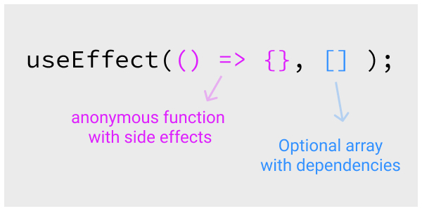From Documentation..
- The Effect Hook lets you perform side effects in function components.
- Data fetching, setting up a subscription, and manually changing the DOM in React components are all examples of side effects.
- If you’re familiar with React class lifecycle methods, you can think of useEffect Hook as componentDidMount, componentDidUpdate and componentWillUnmount combined.
UseEffect Example
import { useState, useEffect } from 'react';
export default () => {
const [counter, changeCounter] = useState(0);
useEffect( () => {
const timer = setTimeout( () => {
changeCounter(counter + 1);
}, 1000);
return () => { clearInterval(timer) }
}, [counter])
return Counter - {counter}
}
Anonymous Callback for side effects
When the component re-renders this callback runs, and the side effect will be performed.
Optional Dependency Array
When the component re-renders, We can add dependency here, whether the callback needs to run or not. We can add state or props or empty values. If we skip this option useeffect will run for every re-renders
Optional Cleanup function
the useEffect cleanup function helps developers clean effects that prevent unwanted behaviors and optimizes application performance.
Multiple UseEffect
useEffect( () => {
const timer = setTimeout( () => {
changeCounter(counter + 1);
}, 1000);
}, [counter]) /* state */
useEffect( () => {
document.title = props.path + ' Page';
}, [props.path]) /* props */
How dependency array Runs?
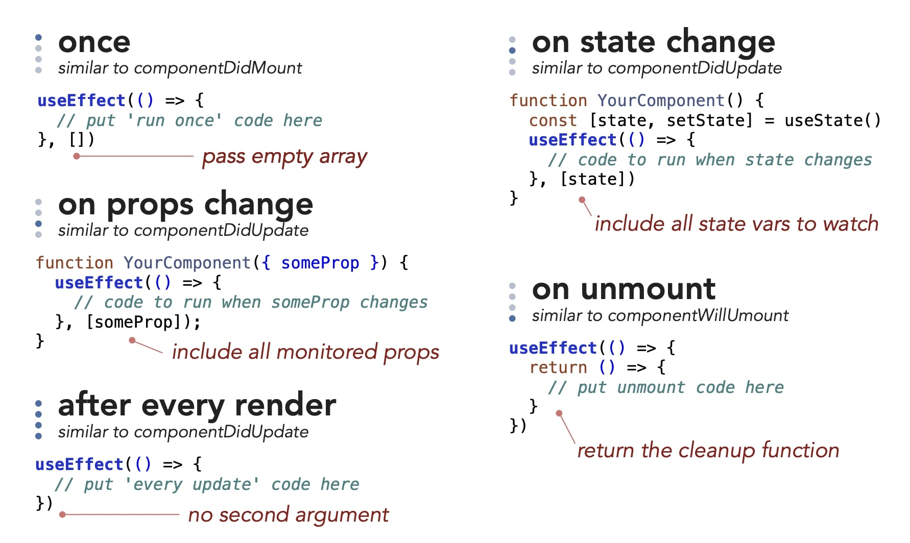useMemo
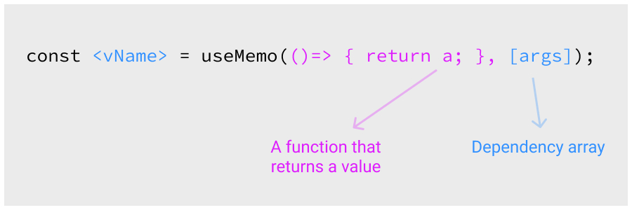From Documentation..
- useMemo Hook returns a memoized value.
- The useMemo Hook only runs when one of its dependencies update. This can improve performance.
useMemo Example
import { useMemo } from 'react';
export default () => {
const memoizedValue = useMemo(() => someFunction(a, b), [a, b]);
return Total - {memoizedValue}
}
someFunction(a, b) {
...
return ...
}
useCallback
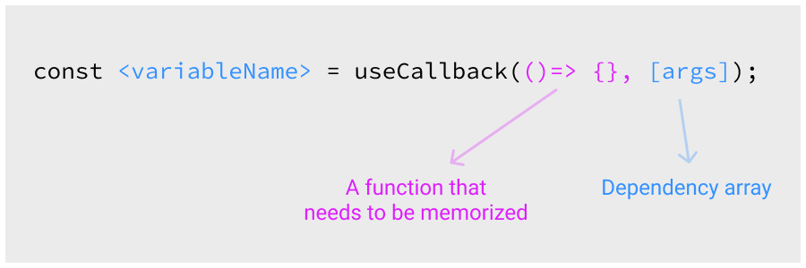From Documentation..
- useCallback Hook returns a memoized callback function.
- useCallback Hook only runs when one of its dependencies update. This can improve performance.
- The useCallback and useMemo Hooks are similar. The main difference is that useMemo returns a memoized value and useCallback returns a memoized function.
useCallback Example
import { useCallback } from 'react';
export default () => {
const handleClick = useCallback(() => {
// handle the click event
}, []);
return <MyChild onClick={handleClick} />;
}
useRef
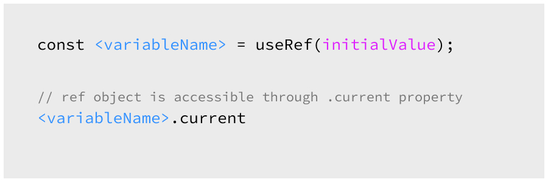From Documentation..
- useRef Hook allows you to persist values between renders. It can be used to store a mutable value that does not cause a re-render when updated.
- It can be used to access a DOM element directly with the help of 'ref' in reactElement
useRef Example
import { useRef } from 'react';
export default () => {
const inputEl = useRef(null);
const onButtonClick = () => {
inputEl.current.focus();
};
return (
<>
);
}
useImperativeHandle
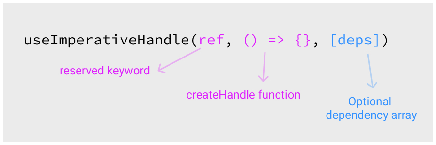From Documentation..
- useImperativeHandle customizes the instance value that is exposed to parent components when using ref
- useImperativeHandle should be used with forwardRef.
- It allows you to replace native functions (such as blur, focus, etc) with functions of your own, thus allowing side-effects to the normal behavior, or a different behavior altogether.
useImperativeHandle Example
import { useImperativeHandle, forwardRef, useRef } from "react";
const FancyInput = forwardRef((props, ref) => {
const inputRef = useRef();
useImperativeHandle(ref, () => ({
activateFocus: () => {
inputRef.current.focus();
}
}));
return <input ref={inputRef} />;
});
function App() {
const inputRef = useRef();
return (
<div className="App">
<FancyInput ref={inputRef} />
<button onClick={() => inputRef.current.activateFocus()}>Focus
</div>
);
}
useContext
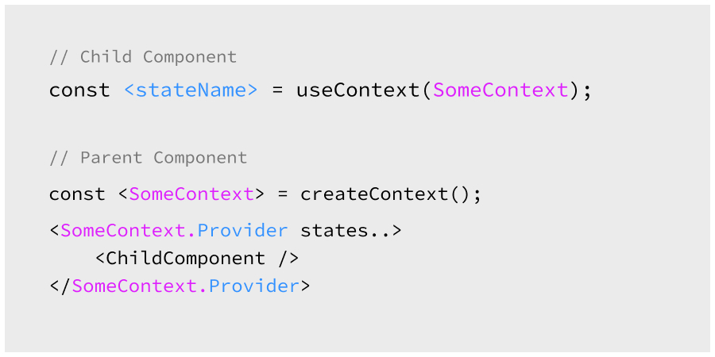From Documentation..
- React Context (createContext, Provider, useContext) is a way to manage state globally.
- UseContext accepts a context object (the value returned from createContext) and returns the current context value for that context.
- A component calling useContext will always re-render when the context value changes.
useContext Example
import React, { useContext } from 'react';
function ThemedButton(props) {
const theme = useContext(ThemeContext);
return (
<button style={{ background: theme.background, color: theme.foreground }}>
I am styled by theme context!
</button>
);
}
const ThemeContext = React.createContext(themes.light);
function App() {
return (
<ThemeContext.Provider value={themes.dark}>
<ThemedButton />
</ThemeContext.Provider>
);
}
useReducer
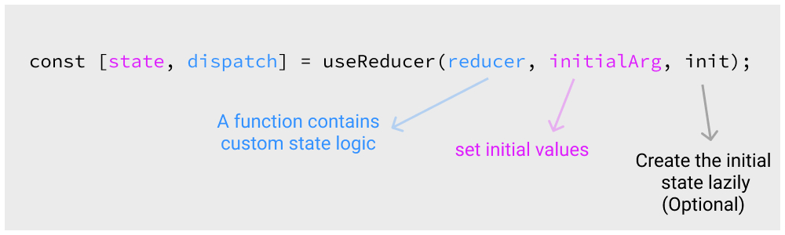From Documentation..
- UseReducer contains your custom state logic and the initialState. It can be a simple value but generally will contain an object.
- The useReducer Hook returns the current state and a dispatch method..
useReducer Example
import { useState } from 'react';
const initialState = {count: 0};
function reducer(state, action) {
switch (action.type) {
case 'increment':
return {count: state.count + 1};
case 'decrement':
return {count: state.count - 1};
default:
throw new Error();
}
}
function Counter() {
const [state, dispatch] = useReducer(reducer, initialState);
return (
<>
Count: {state.count}
<button onClick={() => dispatch({type: 'decrement'})}>-</button>
<button onClick={() => dispatch({type: 'increment'})}>+</button>
);
}
React Custom Hooks
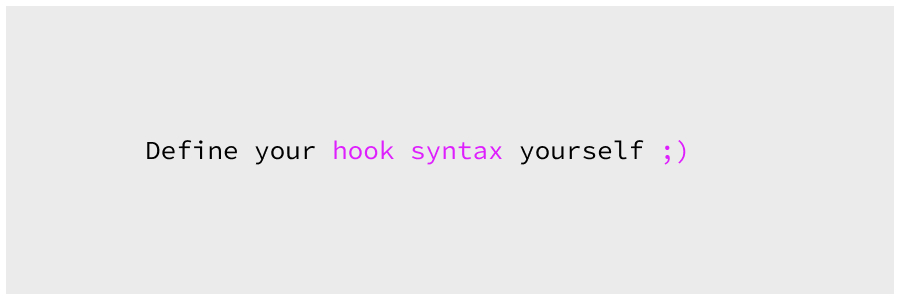When
- When you have component logic that needs to be used by multiple components, we can extract that logic to a custom Hook.
- Custom Hooks start with "use". Example: useFetch.
Example
// File 1 - useApi.js
import { useState } from 'react';
export default function useApi(baseUrl) {
const [data, setData] = useState([]);
const [isQuerying, setIsQuerying] = useState(false);
const list = async () => {
setIsQuerying(true);
const res = await fetch(baseUrl);
const resData = await res.json();
setData([...resData]);
setIsQuerying(false);
};
const api = { list };
return [data, isQuerying, api];
}
// File 2
import useApi from "./useApi.js";
export default function TodoList(props) {
const BASE_URL = `https://wixsite.todo-api/todo/${props.id}`;
const [data, isQuerying, api] = useApi(BASE_URL);
return ...
}
NPM Packages with Custom hooks
- useClippy from use-clippy
- useScript from react-script-hook
- useLocalStorage from @rehooks/local-storage
- useSpeechRecognition from react-speech-kit
Excercise
Thank You
Any doubts? Reach me @
narendran.s@foodhub.com